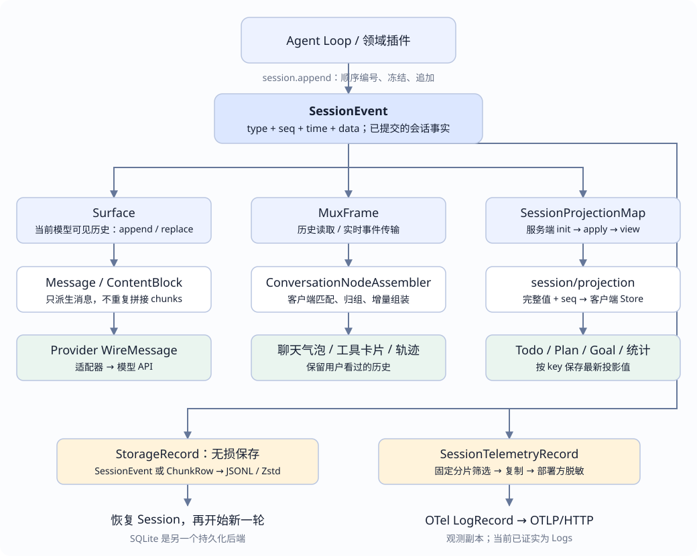

UI
增量更新当前助手气泡；多个分片归入同一个 Step 的展示。
DEEPSEEK HARNESS · EVENT LOG
事件记录“发生了什么”；每个消费者再选择、归并或编码这些事实。读懂映射规则，也就能分清：什么可以恢复、模型实际读到了什么、界面为何这样显示。
type。如果问事件标签数量，当前版本是 13 个核心标签、44 个仓库已知标签，这是另一种计数。核对日期：2026-10-16。源码固定到本仓库子模块提交 99f6f02fecdb7dff40c3fbc9470f5907c29f74ca。示例均为解释用的简化数据，不是实际会话采样。

session.append() 复制并冻结数据，分配 Session 内连续的 seq，记录时间，再追加到内存日志。提交后通过 Cordis 的 session/event 通知消费者。观察者失败不会撤销已提交事件。
内存追加成功还不等于落盘。持久化消费者会缓冲并批量写入，session/flush 是等待持久化消费者排空的检查点。遥测入队也不等于 Collector 已保存。
用户：“读一下 config.json，解释里面的配置。”
turn/start → step/start → user/message → request/header
→ assistant/chunk × N → assistant/message（含 tool-call 块）
→ tool/call → tool/result → step/end
→ step/start → assistant/chunk × N → assistant/message（解释正文）
→ step/end → turn/end
这是典型成功路径；零步结束、重试、取消、压缩会产生其他分支。这些是帮助阅读源码的类型家族。同一个 Message 对象可以嵌在事件中，投影值也可以直接跨传输和客户端复用；不需要每过一层都重新造一套业务字段。
| 类别 | 实际类型 / 标签 | 负责什么 | 与下一步的关系 |
|---|---|---|---|
| ① 会话事件 | SessionEventMap、SessionEvent<T>、SessionHeader | 记录顺序、时间、事实、Surface 操作和来源。 | 各分支共同的输入；Header 保存会话级元数据。 |
| ② 模型中立消息 | Message、ContentBlock；流式阶段用 StreamChunk | 表达用户、助手、工具结果，以及文本、思考、工具调用等内容。 | Surface 选出消息事件，deriveMessages() 取出消息。 |
| ③ 模型厂商协议 | DeepSeek WireMessage、WireToolCall | 符合模型 API 的字段与 role 规则。 | 适配器序列化模型中立消息；不是直接把 Event 发给模型。 |
| ④ UI 传输协议 | MuxFrame、ToolEventView；session/event、session/projection | 把事件或完成的投影值传到客户端。 | 传输帧可以包裹事件，帧 type 和事件 type 各司其职。 |
| ⑤ UI 读模型 | ConversationViewNode、SessionProjectionMap、具体气泡/工具卡片节点 | 描述当前要显示什么。 | 聊天轨迹在客户端组装；领域状态在服务端折叠后推送。 |
| ⑥ 存储记录 | StorageRecord = SessionEvent | ChunkRow；另有 header 行 | 无损保存事件，支持连续 chunks 打包和压缩。 | 读取并解码后还原 SessionEvent；SQLite 使用自己的后端格式。 |
| ⑦ 逻辑遥测记录 | SessionTelemetryRecord | 按观测策略筛选，携带 channel、severity、attributes、body。 | 经过复制、部署方脱敏，再交给遥测后端。 |
| ⑧ OTel 标准记录 | OTel LogRecord / OTLP Logs | 使用标准日志字段，交给 SDK 批处理和导出。 | 进入 Collector 或日志平台；不负责 Session 恢复。 |
模型分支：SessionEvent → Surface → Message → WireMessage
聊天分支：SessionEvent → MuxFrame → ConversationViewNode → 组件
状态分支：SessionEvent → 领域投影值 → session/projection 帧 → Store → 组件
存储分支：SessionEvent ↔ StorageRecord ↔ JSONL / Zstd
遥测分支：SessionEvent → SessionTelemetryRecord → OTel LogRecord上面的 Surface、Store、组件分别是选择结果、客户端状态容器和渲染单元，不额外凑成“第九、第十层 type”。划分的依据是数据的职责，不是所有 TypeScript 声明的总数。
看这条通过 UI 通道发送的流式事件。三个 type 分别回答“传什么”“发生什么”“分片怎么更新”。
{
"type": "session/event", // 传输帧：里面是一条会话事件
"sessionId": "session-demo",
"event": {
"type": "assistant/chunk", // 事件：模型输出了一个流式分片
"seq": 7,
"time": 1792108800000,
"data": {
"turn": 1,
"step": 1,
"chunk": {
"type": "text-delta", // 分片：追加文本
"index": 0,
"text": "我先读取配置。"
}
}
}
}
// JSONC 示意；真实 JSON 不包含这些中文注释。| 判别字段 | 例子 | 不要混淆 |
|---|---|---|
帧 type | session/event、session/projection | 网络消息类别，不是领域事件总表。 |
事件 type | assistant/chunk、tool/result | 对应 SessionEventMap 的键。 |
分片 chunk.type | text-delta、tool-call-delta | 描述流式过程，不是最终消息块。 |
内容块 content[i].type | text、reasoning、tool-call、tool-result、image | 描述完整消息的内容组成；不同分支未必都包含 chunk。 |
| 其他判别字段 | role、source.kind、surfaceOp.op、channel | 分别表示消息角色、来源、Surface 操作与遥测通道。 |
不是所有字段都逐层嵌套，也没有固定的 JSON 深度。例如工具结果块内部还可以包含内容块；打包存储行有自己的 type: "text-chunks"，但它不是 Session Event。
当前 SessionEventMap 本体声明 13 个核心标签；插件通过 declaration merging 扩展。固定版本生成的 KNOWN_SESSION_EVENT_TYPES 有 44 个已知标签，包含核心 13 个。它表示该版本识别的事件词汇，不代表每个 preset 都会产出这 44 种，也不包含所有传输帧、内容块或存储行标签。
turn/start、turn/end、step/start、step/end、user/message、assistant/chunk、assistant/message、tool/call、tool/result、todo/write、request/header、request/context、session/end-seed。
事件与 Surface 类型 · 44 个已知标签 · 分片与内容块类型 · 传输帧类型
下面是依据源码规则制作的说明器，不调用模型、不发送数据。关闭 JavaScript 后仍可阅读后面的完整对照表。
增量更新当前助手气泡；多个分片归入同一个 Step 的展示。
不独立派生消息。完整输出稍后由 assistant/message 进入历史，避免重复。
无损保存；符合条件的连续 delta 可以打包，读取时还原原始事件。
固定投影只保留每个 (turn, step) 的第一条 assistant/chunk；再受模式与脱敏策略控制。
| 事件 | 是否贡献 messages | 具体规则 |
|---|---|---|
user/message | 是 | 传递内部 UserMessage；用户文本与插件注入的上下文用 source 区分。 |
assistant/message | 是，空内容除外 | 完整 AssistantMessage，包含文本、思考或工具调用块；仅承载 usage 的空内容消息跳过。 |
tool/result | 是 | 取内部 ToolResultMessage，保留调用关联。 |
assistant/chunk | 否 | 保留流式过程，不再重复派生消息。 |
tool/call | 否 | 模型的调用块已在 assistant/message 中；执行事件不再生成一份调用消息。 |
todo/write、Turn / Step 边界 | 否 | 供状态和过程投影；Todo 内容可经工具调用参数与工具结果让模型知道。 |
request/header | 不贡献 messages | 另行记录 system、tools、模型配置，和 messages 一起重建请求。 |
Surface 不是把日志过滤一次就结束。surfaceOp: "append" 让消息进入尾部；replace 会用新消息遮蔽一段旧 Surface 节点。压缩后，模型可以读摘要，日志仍保留原对话与替换记录。只有 user/message、assistant/message、tool/result 三类事件可进入 Surface。
// 内部工具结果消息：示意，不是完整构造参数。
{ role: "user", content: [{ type: "tool-result", toolCallId: "call-1", content: [...] }] }
↓ DeepSeek serializeMessages
{ role: "tool", tool_call_id: "call-1", content: "文件内容……" }
// 完整请求还包括请求头，messages 只是其中一部分。
{ ...模型配置, messages: deriveMessages(), system: 当前提示词, tools: 当前工具定义 }内部 Message、Provider WireMessage 与 Event 不是同一种对象。新增模型可见输入，需要留下可重建的事件事实；但“已入日志”不代表“自动进入模型”。
Surface 与 deriveEventMessage · 共享 Message 与 ToolResultMessage · DeepSeek 序列化 · buildRequest
历史读取 / session/event 帧
→ ConversationEventInput（event + 可选工具展示数据）
→ ConversationNodeAssembler（匹配规则、位置、业务上下文）
→ ConversationViewNode / ViewSnapshot
→ 聊天气泡、工具卡片、执行轨迹assistant/chunk 持续更新气泡，完整消息到来后形成最终内容；工具调用与结果按 callId 关联成卡片；Turn / Step 边界提供位置与完成状态。因此，一张卡片可以消费多条事件，一条事件也可能影响多个展示结果。
人类聊天历史不能直接复用压缩后的模型 Surface，否则压缩会让用户之前看过的内容消失。原始追加消息是人类历史的材料，替换副本主要服务模型上下文。界面还可能有独立的实时交互状态；不能假设页面上的一切都能由 Session Log 恢复。
ProjectionDefinition = { key, schema, init, apply, view, stateVersion }
init() → apply(状态, 每条已提交事件) → view(状态)
→ 历史尾页快照 { asOfSeq, values }
→ 实时 session/projection { key, value, seq }
→ 客户端 ProjectionValueStore：较大的 seq 获胜
→ Todo / Plan / Goal / 标题 / 全会话统计领域注册计算规则，框架统一驱动；与当前领域无关的事件返回同一状态引用，可避免下游更新。客户端不重复实现领域折叠。重启后可以从日志重建，挂载投影缓存时也可从有效缓存接着计算。
投影遵守各领域自己的规则，不是一律“取最后一条”。例如当前 Todo UI 投影在下一次 turn/start 清空；历史 todo/write 仍保留。Plan UI 的 pending 展示也不等于恢复了执行端等待中的 Promise 或切换意图。
客户端组装器 · 工具卡片关联 · 服务端投影 · 客户端 seq 规则 · Plan / Todo 的边界
SessionHeader → 首行 type: "session"
SessionEvent[] → StorageRecord[] → JSONL 逻辑行 → 可选 Zstd → 文件
├─ 原样 SessionEvent
└─ ChunkRow：text-chunks / reasoning-chunks / tool-call-chunks
读取：文件 → 解压 → 解码存储行 → 连续 seq 的 SessionEvent[] → 重建 Session默认 packChunks: true、compression: "zstd"。符合条件的至少三条连续同 block delta 可以合并成一个存储行，但成员序号、时间与分片边界都能还原。它没有像遥测那样丢弃中间 chunks。
三个对象要分开：SessionEvent 是逻辑事件，StorageRecord 是存储行值，JSONL / Zstd 是文本与字节编码。打包行不会进入 Session.events，也不是新的领域事件。SQLite 是持久化 seam 的另一个后端，并非必须先写 JSONL 再导入 SQLite。
恢复读取已持久化的前缀，修复中断的工具、Step、Turn 生命周期，再组装可接受新 Turn 的 Agent。只有调用无结果时，不能据此推断外部副作用没发生；恢复后的处理需区分未启动和结果未知。恢复不会复活旧网络流、工具进程或调用栈。
StorageRecord / ChunkRow 与无损 codec · JSONL 编码与耐久语义 · 中断修复 · 恢复与 OTel 拓展阅读
SessionEvent → 固定 chunk 投影 → 复制 data → 部署方脱敏规则
→ SessionTelemetryRecord → logger.emit(LogRecord)
→ BatchLogRecordProcessor → OTLPLogExporter → Collector
agent/error / shutdown → ops 记录 ────────┘
Session 事件副本 → ledger 记录 ─────┘| 来源 | 逻辑遥测字段 | OTel 字段 |
|---|---|---|
| 事件发生时间 | time | timestamp / observedTimestamp |
| 事件 data 的深拷贝 | body | body，经部署策略处理后导出 |
| 会话身份、类型、序号 | attributes | session.id / event.type / event.seq 等 |
| 事件结果与策略 | severity | INFO / WARN / ERROR 的标准编号与文本 |
| 会话事件 / 运行信号 | channel: ledger | ops | 选择不同 instrumentation logger scope |
| 部署产品与版本 | 后端配置的 Resource | service.name / service.version 等 |
固定 chunk 投影仅保留每个 (turn, step) 的第一条 assistant/chunk，因此 seq 有缺口是正常情况。其他事件在固定投影层透传，之后仍受共享模式与部署方脱敏规则约束。工具错误结果和错误 turn/end 等会映射为 ERROR。
FULL 实时交接，FEEDBACK_ONLY 在反馈事件触发时释放相应日志前缀，DISABLED 不交接。当前默认禁用；脱敏扩展点不自带部署方的脱敏规则，不能把“有扩展点”理解成“已自动清理敏感数据”。
这是 OTel Logs 实现。不能据此认定已有 Traces、Metrics 或账单级投递保证。SDK 队列可能丢失或重复交付，恢复也不保证补发上一进程遗漏的记录。OTel 不参与 agents.resume()，更不能替代权威日志。
SessionTelemetryRecord · 筛选、复制、严重级别与身份映射 · logger.emit 与 OTLP 导出 · 模式与交付限制
| 用途 | 当前依赖 | 实际边界 |
|---|---|---|
| Session 冷恢复与新一轮继续 | 耐久 Header、事件、修复逻辑、Agent 重新组装。 | 恢复逻辑会话，不恢复旧执行现场。 |
| 统计读模型 | Turn / Step 边界、首 chunk、调用与结果、assistant usage。 | 轮数、步数、LLM / 工具耗时、首 token 延迟等；缺少输入的指标不能凭空补全。 |
| 领域状态 | Plan、Todo、Goal、权限等各自的事件与折叠规则。 | 按领域决定当前值，不等于所有运行时状态都已耐久化。 |
| 请求检查与内容来源 | 请求 header、指定日志前缀的 Surface、sourceEventSeqs。 | 解释请求从哪些事实组装而来，不等于模型输出可确定性重现。 |
| Fork 与父子会话谱系 | Header 的 parentSession、seedLength；子会话自身的日志与 descriptor。 | 父工具调用历史不能代替子会话完整记录。 |
统计投影口径 · Header 与来源类型 · 子会话 descriptor
这些是可控的核验方法，不是声称本页已运行真实模型、崩溃注入或外部 Collector 测试。